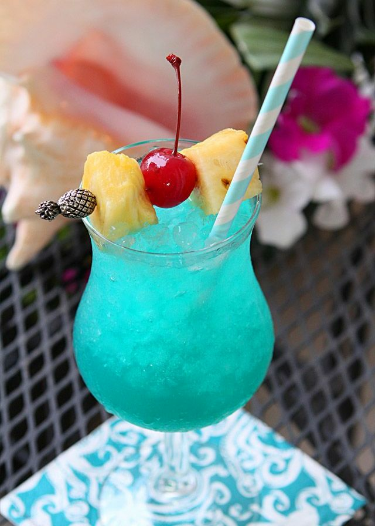

Caipirinha
Ingredientes
- - 2 limones de pica
- - 2 cucharadas de azúcar
- - 2 onzas de cachaza o cachaça
- - 1 cucharada de jugo de limón fresco
- - Hielo picado al gusto
Preparación
- 1-.La caipiriña se puede preparar directamente en un vaso (mediano, no muy alto) o en una coctelera, se
mezclan los pedazos de limón con el azúcar y se usa un majador de cocteles para aplastar suavemente y sacar
el jugo de los limones.
- 2-.Luego se agrega la cachaza y el jugo de limón, se revuelve bien todo. Si lo preparo en una coctelera
vierta la bebida, incluyendo limones aplastados, en un vaso con hielo picado. Si se preparó el coctel
directamente en el vaso, añada hielo picado y revuelva ligeramente.
- 3-.Sirva inmediatamente adornada con una rodaja de limón.
Piña Colada
Ingredientes
- - 3 cl. de ron blanco
- - 9 cl. de zumo de piña natural
- - 3 cl. de leche de coco
Preparación
- 1-.Para elaborar la piña colada es muy sencillo previamente se tienen que verter todos los ingredientes en
una coctelera o en una licuadora y mezclarlas en el interior con el hielo, generalmente picado y agitarlo
mezclando los ingredientes.
- 2-.Posteriormente se sirve con pajita en un vaso, el más apropiado para este tipo de cóctel es un vaso
Hurricane.
- 3-.Finalmente en el borde, únicamente se pone una rodajita de piña como decoración y también se puede
decorar con una guinda o una cereza de cóctel.
Pantera Rosa
Ingredientes
- - 270 ml de leche fresca/evaporada
- - 135 ml de jarabe de granadina
- - 135 ml de ron
- - 135 ml de jugo de naranja/piña
- - Hielo
Preparación
- 1-.En una licuadora agregar todos los ingredientes, licuar bien hasta mezclar y obtener un color rosa.
- 2-.Finalmente servir en copas, decorar con Cerezas o frutillas y hojas de menta para darle frescura.
Cuba Libre
Ingredientes
- - 50 ml Ron dorado (blanco se desvía de la receta original)
- - 120 ml de cola
- - 10 ml de zumo de limón
- - Hielo
Preparación
- 1-.La receta más clásica consiste en poner en un vaso varios cubos de hielo, añadir 42 ml (1 1/2 onza) de
ron oro o añejo (el blanco se aleja de la receta clásica de Bacardi Oro) y terminar de completar el vaso con
refresco de cola. Finalmente se añaden unas gotas de lima, preferentemente, aunque a falta de esta se
empleará limón y se adorna con una rodaja del mismo cítrico.
Blue Hawaiian
Ingredientes
- - 1 onza (30ml.) de ron blanco o vodka
- - 1 onza (30ml.) de Curaçao azul
- - 1 onza (30ml.) de crema de coco
- - 1½ onza (45ml.) de zumo de piña
- - Hielo
Preparación
- 1-.Llenamos la coctelera con hielos.
- 2-.Vertimos dentro de la coctelera 1 onza (30ml.) de ron blanco o vodka, 1 onza de Curaçao azul, 1 onza de
crema de coco y 1½ onza (45ml.) de zumo de piña.
- 3-.Agitamos la mezcla con ganas.
- 4-.Servimos preferiblemente en un vaso huracán y adornamos de forma opcional con una guinda o un trocito
de piña.

Martini
Ingredientes
- - 1 2/3 de ginebra
- - 1/3 de vermouth seco
- - 1 de oliva
Preparación
- 1-.Combinar la ginebra y el vermouth en un vaso mezclador con hielo.
- 2-.Colar y servir en una copa de cóctel.
- 3-.Agregar la oliva y finalmente servir.